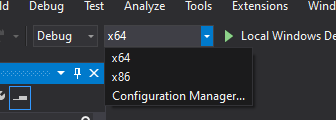

انشاء نافذة
أول شيئ يجب علينا فعله قبل ان نصنع غرافيكس مذهلة هو إنشاء سياق لOpenGL و نافذة للبرنامج للرسم فيها. ولكن، هذه العمليات تكون محددة لكل نظام تشغيل و OpenGL يحاول ابعاد نفسه عن هذه العمليات عمداً. هذا يعني اننا يجب أن ننشئ نافذة، و أن نعرف سياق، و أن ندير إدخال المستخدم كلها لوحدنا.
لحسن الحظ، توجد العديد من المكاتب التي توفر العمليات التي نبحث عنها، بعضها تهدف لOpenGL. هذه المكاتب توفر علينا العمل المحدد لكل نظام تشغيل و تعطينا نافذة و سياق لOpenGL للرسم فيه. بعض من المكاتب المعروفة هي SFML ،SDL ،GLUT و GLFW. في LearnOpenGL سنستعمل GLFW. لك الحرية بإختيار اي مكتبة أُخرى، فإن تهيئة أغلب هذه المكاتب مشابه لتهيئة GLFW.
GLFW
GLFW هي مكتبة، مكتوبة بC، تهدف خصيصاً لOpenGL. GLFW تعطينا الاحتياجات الأساسية المطلوبة للرسم على الشاشة. إنها تسمح لنا بإنشاء سياق لOpenGL، تحديد خواص النافذة، و إدارة إدخال المستخدم، و هذا كافي بشكل كبير لما نريد فعله.
هدف هذا الفصل و الفصل الذي بعده هو تشغيل GLFW، التأكد من انها تنشئ سياق OpenGL بشكل صحيح و أنها تُظهر نافذة بسيطة. هذا الفصل يشرح خطوة بخطوة كيف تحصل على، تبني و تربط مكتبة GLFW. سوف نستعمل بيئة التطوير Microsoft Visual Studio 2019. اذا لم تكن تستعمله (أو اذا كنت تستعمل نسخة أقدم أو أحدث) فلا تقلق، العملية ستكون مشابهة على أغلب بيئات التطوير الأُخرى.
بناء GLFW
تستطيع الحصول على GLFW من صفحة التحميل على موقعهم. توجد نسخ مبنية مسبقاً من GLFW و ملفات رأسية (headers) لVisual Studio 2012 صعوداً الى 2019، ولكن لكي يكون عملنا كاملاً سوف نبني GLFW من الكود. هذا سيعطيك شعوراً عن عملية بناء المكاتب مفتوحة المصدر بنفسك لأنه ليست كل المكاتب لديها الملفات المبنية مسبقاً. لذا فلنُحمل حزمة الكود.
سوف نبني كل المكاتب بناء 64-bit لذا احرص على الحصول على ملفات 64-bit اذا كنت تستعمل الملفات المبنية مسبقاً.
و إبني\حمل مكاتب 32-bit إذا كان حاسوبك 32-bit.
شخصياً (المترجم) أقترح تحميل الملفات المبنية مسبقاً لأن العملية أسرع، إلا إذا أردت أن تتعلم كيفية بناء المكاتب مفتوحة المصدر التي ليس لها نسخ مبنية مسبقاً، أو في حال عدم توفر ملفات مبنية مسبقاً أصلاً.
بعدما حملت حزمة الكود، أخرجه و افتح محتواه. نحن نحتاج بعض الاشياء فقط:
بناء المكتبة من الكود يضمن بأن المكتبة الناتجة مصممة بشكل مضبوط للCPU\نظام التشغيل الخاص بك، رفاهية المكاتب المبنية مسبقاً لا توفرها دائماً (احياناً، الملفات المبنية مسبقاً غير متوفرة لنظامك). مشكلة توفير كود للعالم هي أن ليس كل شخص يستعمل بيئة التطوير نفسها او نظام البناء لبرنامجه، مما يعني أن ملفات المشروع المتوفرة قد لا تكون متوافقة مع ترتيب الناس الآخرين. لذا يجب على الناس تجهيز المشروع الخاص بهم مع ملفات الكود المعطية، و هذا شيئ مرهق. تحديداً لهذه الأسباب توجد اداة تسمى CMake.
CMake
CMake هي أداة تستطيع انشاء ملفات مشروع بإختيار المستخدم (مثلاً Eclipse ،Code::Blocks ،Visual Studio) من مجموعة من ملفات الكود بإستعمال نصوص CMake معرفة مسبقاً. هذا يسمح لنا بإنشاء ملف مشروع Visual Studio 2019 من حزمة كود GLFW الذي نستطيع استعماله لبناء المكتبة. أولاً يجب علينا تحميل و تثبيت CMake الذي تستطيع تحميله من صفحة التحميل.
بعد تثبيت CMake تستطيع أن تختار بأن تشغل CMake بإستعمال الأوامر أو من خلال واجهة المستخدم. بما اننا لا نريد تعقيد الأُمور سوف نستعمل واجهة المستخدم. CMake يتطلب مجلد الكود و مجلد الهدف للملفات المبنية. لمجلد الكود سوف نختار المجلد الأساسي لحزمة GLFW و لمجلد البناء سوف ننشئ مجلداً جديداً و نختاره.

بعدما جُهزت مجلدات المصدر و الهدف، إضغط على زر Configure لكي يستطيع CMake قراءة الإعدادات المطلوبة و الكود. بعدها يجب علينا اختيار المولد للمشروع و بما أننا نستعمل Visual Studio 2019 سنختار خيار Visual Studio 16 (Visual Studio 2019 معروف ايضاً بVisual Studio 16). CMake بعدها سيُظهر خيارات البناء المتوفرة لإعداد المكتبة الناتجة. نستطيع تركها كالقيم الأساسية و الضغط على Configure مرة أُخرى لحفظ الإعدادات. بعد تجهيز الإعدادات، سوف نضغط Generate و ملفات المشروع الناتجة سوف تُنشأ في مجلد البناء.
تحويل الكود الى لغة الحاسوب (Compilation)
في مجلد البناء يوجد ملف اسمه GLFW.sln سوف نفتحه في Visual Studio 2019. بما أن CMake أنشأ ملف مشروع يحتوي الإعدادات المناسبة يجب علينا فقط بناء الsolution. من المفترض أن CMake أعد الsolution اوتوماتيكياً لأن يبني مكتبة 64-bit؛ الآن اضغط build solution. هذا سيعطينا ملف مكتبة مبني تستطيع إيجاده في build/src/Debug يإسم glfw3.lib.
بعدما ولدنا المكتبة يجب أن نتأكد من أن بيئة التطوير تعرف أين تجد المكتبة و الملفات الرأسية لبرنامجنا. توجد طريقتين شائعة لفعل هذا:
- نجد مجلدات ال/lib و /include الخاصة ببيئة التطوير او الcompiler و نضيف مجلد الinclude الخاص بGLFW الى مجلد ال/include لبيئة التطوير و بشكل مشابه نضيف glfw3.lib الى مجلد ال/lib لبيئة التطوير. هذا يعمل، لكنه ليس الطريقة المُستحسنة. فتكون متابعة ملفات المكتبة و الinclude صعبة و تحميل جديد لبيئة التطوير او الcompiler ينتج عنه الحاجة لإعادة هذه العملية كلها.
- طريقة أُخرى (و مقترحة) هي إنشاء مجموعة مجلدات في موقع من اختيارك تحوي كل الملفات الرأسية\المكاتب الذي تستطيع الاشارة اليها من بيئة التطوير\الcompiler الخاص بك. تستطيع، مثلاً، أن تنشئ مجلداً يحوي مجلد Libs و مجلد Include تخزن فيه كل ملفات المكاتب و الملفات الرأسية بشكل منفصل. الآن كل المكاتب منظمة في مكان واحد (يمكن مشاركته بين اكثر من حاسوب). ولكن، المطلوب هو أنه لكل مرة ننشئ مشروعاً جديداً يجب أن نقول لبيئة التطوير أين تجد هذه المجلدات.
بعد تخزين الملفات المطلوبة في موقع من اختيارك، نستطيع الابتداء بإنشاء اول مشروع GLFW OpenGL خاص بنا.
مشروعنا الأول
اولاً، لنفتح Visual Studio و ننشئ مشروعاً جديداً. إختر C++ اذا أُعطيت عدة خيارات و إختر Empty Project (لا تنسَ تسمية مشروعك إسماً مناسباً). بما أننا سوف نفعل كل شيئ ب64-bit سنغير إعدادات المشروع في القائمة في الأعلى قرب Debug من x86 الى x64 (اذا كان حاسوبك 32-bit فإختر x86):
بعد إنهاء هذا، الآن لدينا مساحة عمل لإنشاء أول برنامج OpenGL خاص بنا!
ربط المكتبة (linking)
لكي يستطيع المشروع استعمال GLFW يجب علينا
نستطيع إخبار بيئة التطوير بأن تأخذ موقع المجلد بعين الاعتبار عندما تحتاج للبحث عن ملفات المكاتب و الملفات الرأسية. اضغط بالزر الأيمن على إسم المشروع في الsolution explorer بعدها اذهب الى VC++ Directories كما في الصورة التالية:

من هنا فصاعداً تستطيع إضافة مواقع المجلدات الخاصة بك لكي يعرف المشروع أين يجب أن يبحث. يمكن فعل هذا بواسطة ادخال النص يدوياً أو الضغط على المكان المناسب للنص و اختيار الخيار <Edit..>. افعل هذا لمجلدات المكاتب و مجلدات الinclude:

هنا تستطيع اضافة اي كمية من المجلدات تريد و بيئة التطوير سوف تبحث في هذه المجلدات عندما تبحث عن مكتبة او ملف رأسي. بعد ضم مجلد الInclude لGLFW، سوف تستطيع إيجاد كل الملفات الرأسية لGLFW بواسطة ضم <GLFW/..>. نفس الشيء ينطبق على مجلدات المكاتب.
بما أن بيئة التطوير VS تستطيع إيجاد كل الملفات المطلوبة نستطيع أخيراً ربط GLFW بالمشروع بالذهاب الى تبويب Linker ثم Input:

لتربط مكتبة يجب أن تحدد اسمها للرابط (linker). بما أن اسم المكتبة glfw3.lib، سنضيف هذا الاسم الى حقل الاحتياجات الإضافية Additional Dependencies (اما يدوياً او بإستعمال خيار <Edit..>) و من هنا فصاعداً GLFW سيكون مربوطاً عندما نبني البرنامج. بالإضافة الى GLFW يجب علينا أيضاً اضافة ربط لمكتبة OpenGL، لكن هذا قد يختلف حسب كل نظام تشغيل:
مكتبة OpenGL على Windows
اذا كنت تستعمل Windows فإن مكتبة opengl32.lib OpenGL تأتي مع عدة تطوير برامج (SDK) Microsoft، و هي مثبتة من الأساس عندما تثبت Visual Studio. بما أن هذا الفصل يستعمل الcompiler الخاص بVS و هو على Windows فسوف نضيف opengl32.lib الى اعدادات الربط. لاحظ أن نسخة ال64-bit من OpenGL تسمى opengl32.lib، كما نسخة ال32-bit، و هذا اسم مؤسف بعض الشيء.
مكتبة OpenGL على Linux
على أنظمة Linux يجب أن تربط مكتبة libGL.so بواسطة اضافة -lGL الى اعدادات الربط. اذا لم تستطع إيجاد المكتبة فعلى الأغلب تحتاج تثبيت أحد حزم NVidia ،Mesa أو AMD.
الآن، بعدما أضفت مكاتب GLFW و OpenGL الى إعدادات الربط يجب أن تضم الملفات الرأسية لGLFW كالتالي:
#include <GLFW/glfw3.h>
لمستخدمي Linux الذين يستعملون GCC لبناء الكود، خيارات الأمر التالية قد تساعدك في بناء المشروع: -lglfw3 -lGL -lX11 -lpthread -lXrandr -lXi -ldl. عدم ربط المكاتب هذه بشكل صحيح سيولد undefined reference errors.
بهذا ينتهي تجهيز و إعداد GLFW.
GLAD
ما زلنا لم ننتهي بعد، لوجود شيء آخر يجب علينا القيام به. نظراً لأن OpenGL ليس سوى معيار/تخصيص، فإن الأمر متروك للشركة المصنعة لبرنامج تشغيل كرت الشاشة لتطبيق التخصيص على برنامج التشغيل الذي يدعمه كرت الشاشة المحدد. و لأنه توجد العديد من الإصدارات المختلفة من برامج تشغيل OpenGL، موقع معظم الfunctions له غير معروف في وقت بناء البرنامج و يجب الاستعلام عنها في وقت عمل البرنامج (run-time). و من ثم تكون مهمة المطور استرداد موقع الfunctions التي يحتاجها وتخزينها في function pointers لإستخدامها لاحقًا. استرداد هذه المواقع يكون مختلفاً لكل نظام تشغيل. على Windows يبدو الأمر كالتالي:
// functionتعريف نموذج ال
typedef void (*GL_GENBUFFERS) (GLsizei, GLuint*);
// function pointer ثم تعيينه الى functionإيجاد ال
GL_GENBUFFERS glGenBuffers = (GL_GENBUFFERS)wglGetProcAddress("glGenBuffers");
// الآن بشكل اعتيادي functionيمكن استدعاء ال
unsigned int buffer;
glGenBuffers(1, &buffer);
كما ترون يبدو الكود معقداً و هي عملية مرهقة للقيام بهذا لكل function قد تحتاجه والذي هو ليس مُعرفاً بعد. لحسن الحظ، هناك مكتبات لهذا الغرض أيضاً مثل GLAD و هي مكتبة مشهورة و حديثة.
تجهيز GLAD
GLAD هي مكتبة مفتوحة المصدر تدير كل تلك الأعمال المرهقة التي تحدثنا عنها. لGLAD طريقة إعداد مختلفة قليلاً عن معظم المكتبات مفتوحة المصدر. يستخدم GLAD خدمة ويب حيث يمكننا إخبار GLAD بإصدار OpenGL الذي نريده و نحمل كل الfunctions لOpenGL وفقاً لهذا الإصدار.
انتقل إلى خدمة ويب GLAD، وتأكد من ضبط اللغة على ++C، وفي قسم API حدد إصدار OpenGL على الأقل 3.3 (وهو ما سنستخدمه؛ والإصدارات الأعلى جيدة أيضاً). تأكد أيضًا من أن الprofile محدد على Core و خيار Generate a loader صحيح. تجاهل الامتدادات (extensions) (في الوقت الحالي) و اضغط على Generate لإنتاج ملفات المكتبة الناتجة.
تأكد من استخدام إصدار GLAD1 من: https://glad.dav1d.de/ كما في أعلاه. هناك أيضًا إصدار GLAD2 لكنه لن يتم بناء البرنامج بإستعماله هنا.
من المفترض أن GLAD قد وفر لك الآن ملفًا مضغوطًا يحتوي على مجلدي include و ملف glad.c واحد. انسخ كلا المجلدين (glad و KHR) إلى مجلد الinclude الخاص بك (أو أضف عنصراً إضافياً يشير إلى هذه المجلدات)، وأضف ملف glad.c إلى مشروعك.
بعد الخطوات السابقة، يجب أن تكون قادراً على إضافة أمر الinclude التالي أعلى ملفك:
#include <glad/glad.h>
محاولة بناء البرنامج لا ينبغي أن تعطيك أي errors، وعند هذه النقطة نحن مستعدين للانتقال إلى الفصل التالي حيث سنناقش كيف يمكننا بالفعل استخدام GLFW و GLAD لتكوين سياق OpenGL و إنشاء نافذة. تأكد من أن تتحقق من أن كل مواقع مجلدات المكاتب و الملفات الرأسية صحيحة و أن أسماء المكاتب في اعدادات الربط تتطابق مع المكاتب المطلوبة.